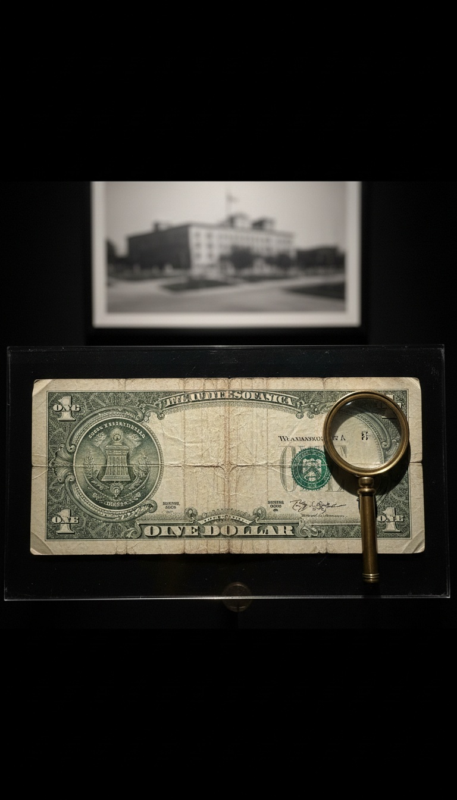

John F. Kennedy signed the order that let the United States Treasury print its own money on June 4, 1963, and the order was buried with him at Arlington five months later.
Executive Order 11110 sits in the Federal Register at 28 FR 5605, and anyone can pull it. The Treasury issued more than four billion dollars in silver-backed notes under the authority it granted, Kennedy was shot in Dealey Plaza 171 days after signing it, and every note printed under it was pulled from circulation by 1968. Those three facts sit in three different government archives, and no one in Washington has ever put them in the same sentence.

The Order Kennedy Signed in the Oval Office
Executive Order 11110 amended a 1951 order, Executive Order 10289, and handed the Secretary of the Treasury a power that had belonged to the President alone: the authority to issue silver certificates against the silver bullion sitting in the Treasury vaults. The amendment is one paragraph long. It runs under the signature "John F. Kennedy, The White House, June 4, 1963."
The same day, Kennedy signed Public Law 88-36, which repealed the Silver Purchase Act of 1934 and cleared the way for the Federal Reserve to issue one-dollar and two-dollar notes for the first time. Two signatures, one day, two currencies. One paid interest to the twelve Federal Reserve banks that issued it. The other paid interest to nobody.
A silver certificate is a Treasury obligation. The words printed across the top of every one read "Silver Certificate," and the promise printed beneath the portrait read "one dollar in silver payable to the bearer on demand." A Federal Reserve note is a bank obligation. The Treasury borrows it into existence, and the debt sits on the national books with interest attached. Kennedy put the Treasury's version back on the street.
Four Billion Dollars That Owed Nothing to Any Bank
The notes went out as Series 1957B one-dollar silver certificates. They carry two signatures: C. Douglas Dillon, Kennedy's Secretary of the Treasury, and Kathryn O'Hay Granahan, Treasurer of the United States. The Bureau of Engraving and Printing ran the series through 1963 and into 1964. Collectors can still buy them for a few dollars over face at any coin show in America, and the Smithsonian's National Numismatic Collection in Washington holds pristine sheets.
Jim Marrs put the total at $4,292,893,815 in Crossfire, published in 1989. Marrs spent the 1970s at the Fort Worth Star-Telegram covering the assassination and interviewed more witnesses than the Warren Commission bothered to call. Oliver Stone built the 1991 film JFK on his research. The Treasury has never challenged the number in print.
Dillon is the detail the textbooks skip. He came to Kennedy's cabinet from Dillon, Read and Company, the Wall Street investment house his father built, and he served Eisenhower as Under Secretary of State before that. Kennedy signed an order handing the Treasury the power to issue debt-free money, and the man whose name went on every note was a Wall Street banker. The order put Dillon's own signature on the paper that cut his industry out.
One Hundred Seventy-One Days
June 4 to November 22 is 171 days. Kennedy's motorcade turned onto Elm Street at 12:30 in the afternoon, Central time, and the shots came from the sixth floor of the Texas School Book Depository at 411 Elm. The building is the Sixth Floor Museum today, and the corner window is glassed off so no visitor can stand where the rifle rested.
Lyndon Johnson took the oath of office at 2:38 that afternoon aboard Air Force One at Love Field, ninety-eight minutes after Kennedy was pronounced dead at Parkland Hospital. Judge Sarah T. Hughes administered it. Kennedy's own Catholic missal was pulled from his cabin for Johnson's hand because nobody on board could find a Bible. The plane, tail number SAM 26000, sits in the National Museum of the United States Air Force in Dayton, Ohio. Kennedy's casket was in the rear of that cabin during the oath.
Johnson's first full year in office ended silver money in America. He did not wait for the funeral flowers to wilt before the Treasury changed course.
Two presidents in a century printed money the banks could not charge interest on. Both left office in a casket, and both currencies went into the furnace within three years of the burial.
The Money Stopped Before the Investigation Started
On March 25, 1964, Dillon announced that the Treasury would no longer redeem silver certificates for silver dollars. The Warren Commission had held its first hearing on February 3. The money was being killed while the murder was still being examined, and the Commission's 888-page report, delivered to Johnson on September 24, 1964, does not contain the words "Executive Order 11110."
Johnson signed the Coinage Act on July 23, 1965, stripping silver out of every dime and quarter and cutting the half dollar to 40 percent. He said at the signing ceremony, "If anybody has any idea of hoarding our silver coins, let me say this. Treasury has a lot of silver on hand." Within twenty months of Dallas, the metal Kennedy had put behind the dollar was written out of American coinage by the man who inherited his office.
The last legal deadline came on June 24, 1968. After that date, a silver certificate could no longer be exchanged for silver at any Treasury window. The 1964 Kennedy half dollar, struck in 90 percent silver as a memorial, was hoarded so fast it vanished from cash drawers within the year. The public understood what the metal meant even when Washington pretended it did not.
Housekeeping Does Not Take Twenty-Four Years to Erase
The Treasury's own line on Executive Order 11110 is that it was a bookkeeping delegation designed to let the Secretary wind down silver certificates while Congress moved the small bills to the Federal Reserve. The record breaks that line in three places. Public Law 88-36 already gave the Treasury everything it needed to wind silver down, so a second signature delegating the power to issue more was surplus to that purpose. The delegation had no expiration date, and a housekeeping memo has one. And the power sat live on the books for twenty-four years after Kennedy's death, which is a strange lifespan for a chore.
Ronald Reagan revoked Executive Order 11110 on September 9, 1987, inside Executive Order 12608. The revocation is buried in a list of dozens of dead orders being cleaned up together, and it drew silence from the press gallery and from the House floor. The government kept a debt-free money power on the books for a quarter century and then erased it in a footnote six weeks before Black Monday. Nobody erases a thing that never mattered.
The President Who Did It Before Him
Abraham Lincoln signed the Legal Tender Act on February 25, 1862, and the Treasury printed $450 million in United States Notes, the greenbacks, to pay for the war instead of borrowing at the 24 to 36 percent the New York banks were quoting. The Smithsonian holds the plates. Lincoln was shot at Ford's Theatre on April 14, 1865. Congress passed the Contraction Act on April 12, 1866 and began pulling greenbacks out of circulation within a year of his burial.
The Federal Reserve was designed at the Jekyll Island Club off the Georgia coast in November 1910 by Senator Nelson Aldrich, Paul Warburg of Kuhn, Loeb, Frank Vanderlip of National City Bank, and Henry Davison of J.P. Morgan. Woodrow Wilson signed the Federal Reserve Act on December 23, 1913, two days before Christmas, with most of Congress already home. Kennedy was the first president since Lincoln to sign paper that walked around it.
The Sixth Floor Museum sells a ticket to the window. The Air Force museum in Dayton lets you walk the aisle where Johnson raised his hand. The Federal Register will print you the order for free. Every piece of the story is on public display, and the pieces are kept in three different states so nobody stands in front of all of them at once.
Kennedy told the American Newspaper Publishers Association on April 27, 1961, that "the very word secrecy is repugnant in a free and open society," and he spent the rest of that speech describing a monolithic and ruthless conspiracy that relied on covert means. Two years later he signed the order. Five months after that he was dead, and the money went into the furnace. The question is who told Dillon to stop in March 1964, four months after Dallas, and why that name has never been printed. If you know it, put it in the comments.
Before you go
7 books the Vatican doesn't want you reading. Free PDF — the texts they cut, with sources. Joined by 140+ Inner Circle members.
No spam. Unsubscribe anytime.
Go deeper
The Hidden Canon, Vol. I — Enoch. Jubilees. Thomas. Mary. Judas. 90 pages, 14 chapters, every receipt cited. The books your Bible quietly removed.
Read the Canon →Books that informed this investigation
As an Amazon Associate, Hidden Epoch earns from qualifying purchases. Cost to you: nothing.
Research safely
The VPN we use to research without being tracked. First 3 months free.
Get NordVPN →